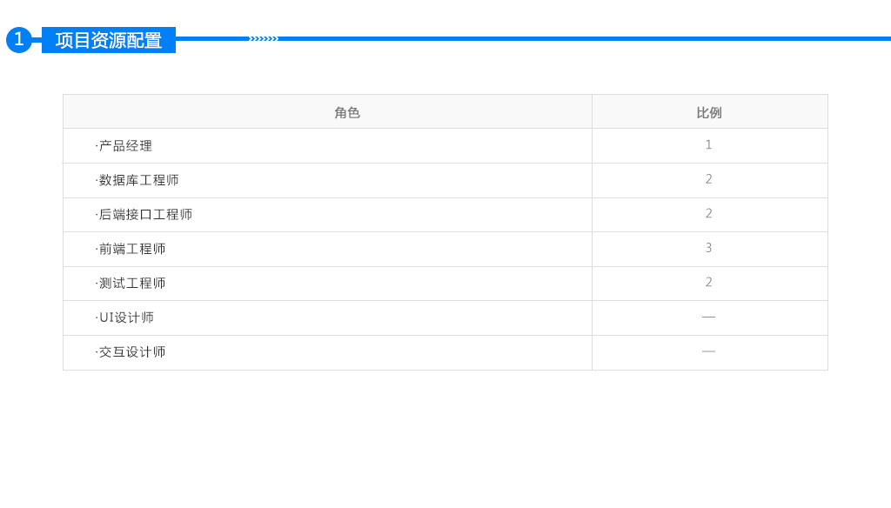
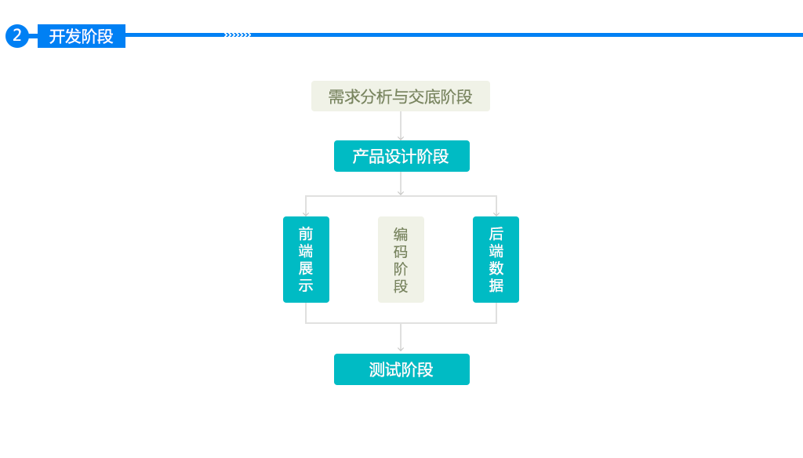
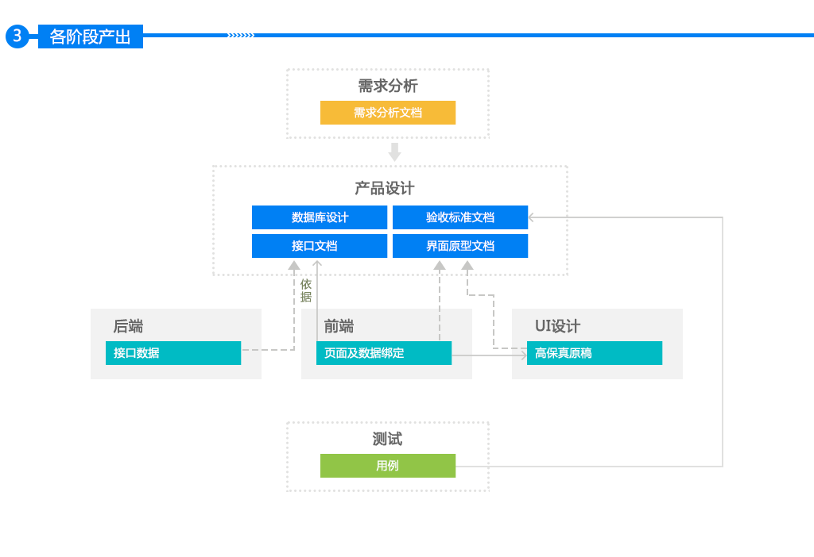
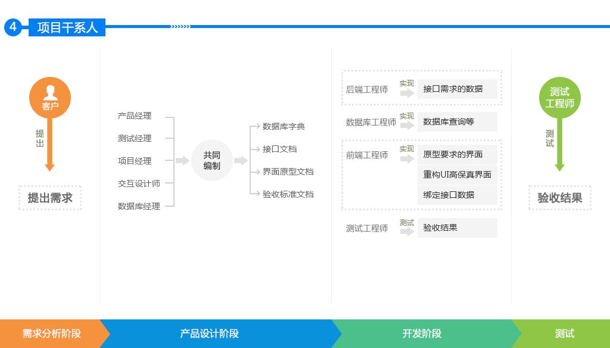

支持移动端滑动操作
全屏/取消全屏
所有PPT全局概览
切换PPT页 / 下一页PPT
目前从实施和客服接过来的需求文档有如下几点问题：
追根溯源，一切工作要从需求开始，也必须到需求结束
公司从年初就定了这种工作模式，实际上形同虚设。
实施与开发貌合神离，互不理解，互相埋怨
实施、客服与开发绑定为一个团队，荣辱与共！
- 设立团队责任人 -
实施遇到的问题分为内部与外部：
实施遇到的问题从内部外部分两部分：
实施因为在项目现场，同客户沟通都是面对面的，沟通效率还是蛮高的，基本上客户提出什么问题，我们都没能够清楚的理解并形成文档让客户进行确认。
实施周期长，实施人员无法脱身，导致一连串的问题：
资源紧张、项目延期、回款进度慢…
不论技术或业务的培训，频次直线下降！
技术日新月异，员工无所提升！
技术作为命脉所在，所谓齐心捐就的图书馆，轻率儿戏！
罔顾培训创新，支持形同施舍！
明显的问题是：
需求测试工作量估算不准确
测试、开发及研究院之间的对接不够顺畅
测试团队梯队建设
从数据上看，V3.4.4版本总共遗留问题170个；V3.4.5.0版本遗留未修复问题90个，V3.4.5.2版本遗留未修复问题241个，每个版本遗留问题都较多。（下一页展示图表）
绩效制度与福利
开发人员理解需求不深，和业务有点脱离，设计人员得到的支持也不够




工期不是项目经理或开发人员评估的，是指定的。这个很不合理，在资源不匹配的情况下，指定一个不合理的时间，想不延期都难。
资源配备不足。一个合理的团队，除了项目经理之外，高中初级开发工程师和测试工程师，都应该有一个合理的配置。
需求分析时间过长、需求文档不足。经常被要求什么时候完成项目，而对什么时候开始需求分析、完成需求分析不做要求。将按时完成项目的压力，堆积到开发和测试阶段。
干扰、打断，无时无刻都有，频繁干扰主要来自实施、客服。
工期，一定是要经过合理评估的，才予以实施，千万不要拍脑袋。
合理的团队人员配备上，除了项目经理之外，高中初开发和测试4种角色的配备，
应该保持在1:2:2:2（少于5人的团队，1:1:1:1），高级工程师一定不能少。如果工期要求严格，那么就要配备足够的资源，最终制定的工期一定要和评估的工作量人天是匹配的。
指定需求分析的标准（主要是文档标准），需求交底往往是会议沟通的形式，凭借大脑是无法记忆很多的东西的，一定要以文档的形式提交需求分析成果，而且一定要细致，能够基于它做详细设计。
需求分析人员，在项目开发前期，一定要长期驻留，特别是设计阶段，要随时提供支持。这个非常重要。
产品开发、项目维护，一定要职责分开、明确。实施和客服，尽量不要干扰非本项目群人员。
赶工。纵观公司多年来所开发的产品，每一个产品都是赶出来的，未开发完（或者还未开发）就已经卖给客户了。需求分析、系统设计等在软件项目开发周期中很重要的一些环节，没有分配时间，完全被忽视了。
项目经理管理职责缺位。各个项目团队的项目经理或主管，都没有把应承担的职责担起来，他们经常在干的事情是：主力开发（团队中最主力的那个！）。项目经理做了程序员该做的事情，自己应该做的事情（进度和质量管控，尤其是质量管控），没做。
测试粒度和强度不够。测试在项目开发周期中，介入的太晚，目前主要是测试工程师向项目经理询问需求及实现，然后编写测试用例，在开发过程中或结束时，进行测试。由于项目经理的时间被开发工作所占据，没有时间去评审测试用例。一个产品，往往就只有一个测试，在项目开发阶段的尾声，一个测试，远远不够。
制定可行的开发流程。从项目立项起，就要根据预估的项目体量，确定可行的项目周期（发布节点）。然后制定需求、设计、开发、测试、发布等各大时间点。各个阶段占整个项目工期的时间比重大约如下：
需求：不超过总工期的1/4； 设计：不超过总工期的1/5； 开发：不超过总工期的1/2
测试和debug：不超过总工期的1/3（测试和开发有重叠）。一定要严格管控这个时间，尤其是第一个时间点。在制定项目总工期时，一定要考虑到项目的体量、既有项目的业务和技术的基础，还要参考技术人员的意见，不能拍脑袋说，1个月开发出来、2个月开发出来。
测试提前介入。需求确认、交底等评审会议，测试全部要参加。测试对业务的理解、软件模型的理解，应达到项目经理的水准。
Thank you
2016-11-17